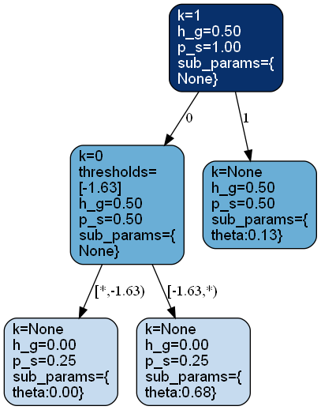
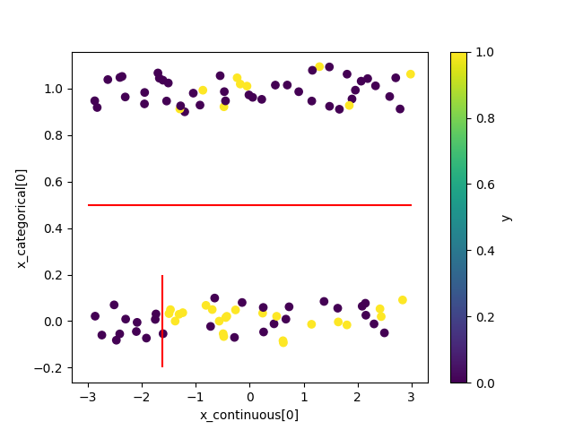
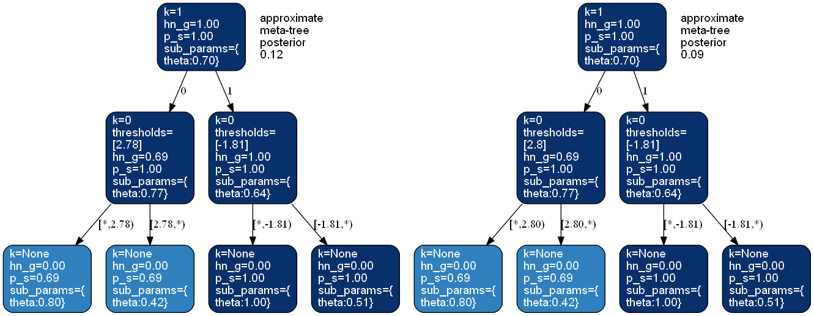

bayesml.metatree package#
 Module contents#
Stochastic Data Generative Model#
\(\boldsymbol{x}=[x_1, \ldots, x_p, x_{p+1}, \ldots , x_{p+q}]\) : an explanatory variable. The first \(p\) variables are continuous. The other \(q\) variables are categorical.
\(\mathcal{Y}\) : a space of an objective variable
\(y \in \mathcal{Y}\) : an objective variable
\(D_\mathrm{max} \in \mathbb{N}\) : the maximum depth of trees
\(T_\mathrm{max}\) : the perfect tree where all the inner nodes have the same number of child nodes and all the leaf nodes have the same depth of \(D_\mathrm{max}\)
\(\mathcal{S}_\mathrm{max}\) : the set of all the nodes of \(T_\mathrm{max}\)
\(s \in \mathcal{S}_\mathrm{max}\) : a node of a tree
\(\mathcal{I}_\mathrm{max} \subset \mathcal{S}_\mathrm{max}\) : the set of all the inner nodes of \(T_\mathrm{max}\)
\(\mathcal{L}_\mathrm{max} \subset \mathcal{S}_\mathrm{max}\) : the set of all the leaf nodes of \(T_\mathrm{max}\)
\(\mathcal{T}\) : the set of all the pruned subtrees of \(T_\mathrm{max}\)
\(T \in \mathcal{T}\) : a pruned subtree of \(T_\mathrm{max}\)
\(\mathcal{I}_T\) : the set of all the inner nodes of \(T\)
\(\mathcal{L}_T\) : the set of all the leaf nodes of \(T\)
\(\boldsymbol{k}=(k_s)_{s \in \mathcal{I}_\mathrm{max}}\) : indices of the features assigned to inner nodes, i.e., \(k_s \in \{1, 2,\ldots,p+q\}\). If \(k_s \leq p\), the node \(s\) has a threshold.
\(\mathcal{K}=\{ 1, 2, \ldots , p+q \}^{|\mathcal{I}_\mathrm{max}|}\) : the set of all \(\boldsymbol{k}\)
\(\boldsymbol{\theta}=(\theta_s)_{s \in \mathcal{S}}\) : parameters assigned to the nodes
\(s_{\boldsymbol{k},T}(\boldsymbol{x}) \in \mathcal{L}_T\) : a leaf node which \(\boldsymbol{x}\) reaches under \(T\) and \(\boldsymbol{k}\)
Prior Distribution#
\(g_s \in [0,1]\) : a hyperparameter assigned to each node \(s \in \mathcal{S}_\mathrm{max}\). For any leaf node \(s\) of \(T_\mathrm{max}\), we assume \(g_s=0\).
The prior distribution of the parameter \(\theta_s\) is assumed to be a conjugate prior distribution for \(p(y | \theta_s)\) and independent for each node.
Posterior Distribution#
The posterior distribution is approximated as follows:
\(n \in \mathbb{N}\) : a sample size
\(\boldsymbol{x}^n = \{ \boldsymbol{x}_1, \boldsymbol{x}_2, \ldots, \boldsymbol{x}_n \}\)
\(\boldsymbol{x}_{s, \boldsymbol{k}}\) : the explanatory variables of the data points that pass through \(s\) under \(\boldsymbol{k}\).
\(y^n = \{ y_1, y_2, \ldots, y_n \}\)
\(y_{s, \boldsymbol{k}}\) : the objective variables of the data points that pass through \(s\) under \(\boldsymbol{k}\).
First, the posterior distribution \(p(\boldsymbol{k}, T, \boldsymbol{\theta} | \boldsymbol{x}^n, y^n)\) can be decomposed as follows:
For \(\boldsymbol{\theta}\), we can exactly calculate the posterior distribution \(p(\boldsymbol{\theta} | \boldsymbol{x}^n, y^n, \boldsymbol{k}, T)\) because we assumed the conjugate prior distribution.
Also for \(T\), we can exactly calculate the posterior distribution \(p(T | \boldsymbol{x}^n, y^n, \boldsymbol{k})\) by using the concept called a meta-tree. The meta-tree is not a tree but a set of trees where all the trees have the same feature assignment \(\boldsymbol{k}\) to their inner nodes. The posterior distribution of the trees over the meta-tree defined by \(\boldsymbol{k}\) is as follows:
where \(g_{s|\boldsymbol{x}^n, y^n, \boldsymbol{k}} \in [0,1]\) can be calculated from \(\boldsymbol{x}^n\), \(y^n\), and \(\boldsymbol{k}\) as follows:
where \(\mathrm{Ch}(s)\) denotes the set of child nodes of \(s\) on \(T_\mathrm{max}\) and \(q(y_{s, \boldsymbol{k}}|\boldsymbol{x}_{s, \boldsymbol{k}}, s, \boldsymbol{k})\) is defined for any \(s \in \mathcal{S}_\mathrm{max}\) as follows.
Here, \(f(y_{s, \boldsymbol{k}} | \boldsymbol{x}_{s, \boldsymbol{k}}, s, \boldsymbol{k})\) is defined as follows:
For \(\boldsymbol{k}\), there are two algirithms to approximate the posterior distribution \(p(\boldsymbol{k} | \boldsymbol{x}^n, y^n)\): the meta-tree random forest (MTRF) and the meta-tree Markov chain Monte Carlo (MTMCMC) method.
Approximation by MTRF#
In MTRF, we first construct a set of feature assignment vectors \(\mathcal{K}' = \{\boldsymbol{k}_1, \boldsymbol{k}_2, \ldots, \boldsymbol{k}_B\}\) by using the usual (non-Bayesian) random forest algorithm. Next, for \(\boldsymbol{k} \in \mathcal{K}\), we approximate the posterior distribution \(p(\boldsymbol{k} | \boldsymbol{x}^n, y^n)\) as follows:
where \(s_{\lambda}\) is the root node of \(T_\mathrm{max}\).
The predictive distribution is approximated as follows:
where \(q(y_{n+1}|\boldsymbol{x}_{n+1},\boldsymbol{x}^n, y^n, s_\lambda, \boldsymbol{k})\) is calculated in a similar manner to \(q(y_{s_\lambda, \boldsymbol{k}}|\boldsymbol{x}_{s_\lambda, \boldsymbol{k}}, s_\lambda, \boldsymbol{k})\).
The expectation of the predictive distribution is approximated as follows.
where the expectation for \(q\) is recursively given as follows.
Here, \(f(y_{n+1}|\boldsymbol{x}_{n+1},\boldsymbol{x}^n, y^n, s, \boldsymbol{k})\) is calculated in a similar manner to \(f(y_{s, \boldsymbol{k}} | \boldsymbol{x}_{s, \boldsymbol{k}}, s, \boldsymbol{k})\) and \(s_\mathrm{child}\) is the child node of \(s\) on the path from the root node to the leaf node \(s_{\boldsymbol{k},T_\mathrm{max}}(\boldsymbol{x}_{n+1})\).
Approximation by MTMCMC#
In MTMCMC method, we generate a sample \(\boldsymbol{k}\) from the posterior distribution \(p(\boldsymbol{k} | \boldsymbol{x}^n, y^n)\) by a MCMC method, and the posterior distribution is approximated by the empirical distribution of this sample. Let \(\{\boldsymbol{k}^{(t)}\}_{t=1}^{t_\mathrm{end}}\) be the obtained sample.
The predictive distribution is approximated as follows:
The expectation of the predictive distribution is approximated as follows:
References#
Dobashi, N.; Saito, S.; Nakahara, Y.; Matsushima, T. Meta-Tree Random Forest: Probabilistic Data-Generative Model and Bayes Optimal Prediction. Entropy 2021, 23, 768. https://doi.org/10.3390/e23060768
Nakahara, Y.; Saito, S.; Kamatsuka, A.; Matsushima, T. Probability Distribution on Full Rooted Trees. Entropy 2022, 24, 328. https://doi.org/10.3390/e24030328
Nakahara, Y.; Saito, S.; Ichijo, N.; Kazama, K.; Matsushima, T. Bayesian Decision Theory on Decision Trees: Uncertainty Evaluation and Interpretability. Proceedings of The 28th International Conference on Artificial Intelligence and Statistics, in Proceedings of Machine Learning Research 2025, 258:1045-1053 Available from https://proceedings.mlr.press/v258/nakahara25a.html.
- class bayesml.metatree.GenModel(c_dim_continuous, c_dim_categorical, c_max_depth=2, c_num_children_vec=2, c_num_assignment_vec=None, c_ranges=None, SubModel=<module 'bayesml.bernoulli' from '/Users/nakahara/Documents/GitHub/BayesML/bayesml/bernoulli/__init__.py'>, sub_constants={}, root=None, h_k_weight_vec=None, h_g=0.5, sub_h_params={}, h_metatree_list=[], h_metatree_prob_vec=None, seed=None)#
Bases:
GenerativeThe stochastice data generative model and the prior distribution
- Parameters:
- c_dim_continuousint
A non-negative integer
- c_dim_categoricalint
A non-negative integer
- c_num_children_vecnumpy.ndarray, optional
A vector of positive integers whose length is
c_dim_continuous+c_dim_categorical, by default [2,2,…,2]. The firstc_dim_continuouselements represent the numbers of children of continuous features at inner nodes. The otherc_dim_categorialelements represent those of categorical features. If a single integer is input, it will be broadcasted.- c_max_depthint, optional
A positive integer, by default 2
- c_num_assignment_vecnumpy.ndarray, optional
A vector of positive integers whose length is
c_dim_continuous+c_dim_categorical. The firstc_dim_continuouselements represent the maximum assignment numbers of continuous features on a path. The otherc_dim_categorialelements represent those of categorical features. If it has a negative element (e.g., -1), the corresponding feature will be assigned any number of times. By default [-1,…,-1].- c_rangesnumpy.ndarray, optional
A numpy.ndarray whose size is (c_dim_continuous,2). A threshold for the
k-th continuous feature will be generated betweenc_ranges[k,0]andc_ranges[k,1]. By default, [[-3,3],[-3,3],…,[-3,3]].- SubModelclass, optional
bernoulli, categorical, poisson, normal, exponential, or linearregression, by default bernoulli
- sub_constantsdict, optional
constants for self.SubModel.GenModel, by default {}
- rootmetatree._Node, optional
A root node of a meta-tree, by default a tree consists of only one node.
- h_k_weight_vecnumpy.ndarray, optional
A vector of positive real numbers whose length is
c_dim_continuous+c_dim_categorical, by default [1,…,1].- h_gfloat, optional
A real number in \([0, 1]\), by default 0.5
- sub_h_paramsdict, optional
h_params for self.SubModel.GenModel, by default {}
- h_metatree_listlist of metatree._Node, optional
Root nodes of meta-trees, by default []
- h_metatree_prob_vecnumpy.ndarray, optional
A vector of real numbers in \([0, 1]\) that represents prior distribution of h_metatree_list, by default uniform distribution Sum of its elements must be 1.0.
- seed{None, int}, optional
A seed to initialize numpy.random.default_rng(), by default None
- Attributes:
- c_dim_features: int
c_dim_continuous + c_dim_categorical
Methods
gen_params([feature_fix, threshold_fix, ...])Generate the parameter from the prior distribution.
gen_sample([sample_size, x_continuous, ...])Generate a sample from the stochastic data generative model.
Get constants of GenModel.
Get the hyperparameters of the prior distribution.
Get the parameter of the sthocastic data generative model.
load_h_params(filename)Load the hyperparameters to h_params.
load_params(filename)Load the parameters saved by
save_params.save_h_params(filename)Save the hyperparameters using python
picklemodule.save_params(filename)Save the parameters using python
picklemodule.save_sample(filename, sample_size[, x])Save the generated sample as NumPy
.npzformat.set_h_params([h_k_weight_vec, h_g, ...])Set the hyperparameters of the prior distribution.
set_params([root])Set the parameter of the sthocastic data generative model.
visualize_model([filename, format, ...])Visualize the stochastic data generative model and generated samples.
- get_constants()#
Get constants of GenModel.
- Returns:
- constantsdict of {str: int, numpy.ndarray}
"c_dim_continuous": the value ofself.c_dim_continuous"c_dim_categorical": the value ofself.c_dim_categorical"c_num_children_vec": the value ofself.c_num_children_vec"c_max_depth": the value ofself.c_max_depth"c_num_assignment_vec": the value ofself.c_num_assignment_vec"c_ranges": the value ofself.c_ranges
- set_h_params(h_k_weight_vec=None, h_g=None, sub_h_params=None, h_metatree_list=None, h_metatree_prob_vec=None)#
Set the hyperparameters of the prior distribution.
- Parameters:
- h_k_weight_vecnumpy.ndarray, optional
A vector of positive real numbers whose length is
c_dim_continuous+c_dim_categorical, by default None.- h_gfloat, optional
A real number in \([0, 1]\), by default None
- sub_h_paramsdict, optional
h_params for self.SubModel.GenModel, by default None
- h_metatree_listlist of metatree._Node, optional
Root nodes of meta-trees, by default None
- h_metatree_prob_vecnumpy.ndarray, optional
A vector of real numbers in \([0, 1]\) that represents prior distribution of h_metatree_list, by default None. Sum of its elements must be 1.0.
- get_h_params()#
Get the hyperparameters of the prior distribution.
- Returns:
- h_paramsdict of {str: float, list, dict, numpy.ndarray}
"h_k_weight_vec": the value ofself.h_k_weight_vec"h_g": the value ofself.h_g"sub_h_params": the value ofself.sub_h_params"h_metatree_list": the value ofself.h_metatree_list"h_metatree_prob_vec": the value ofself.h_metatree_prob_vec
- gen_params(feature_fix=False, threshold_fix=False, tree_fix=False, threshold_type='even')#
Generate the parameter from the prior distribution.
The generated vaule is set at
self.root.- Parameters:
- feature_fixbool, optional
If
True, feature assignment indices will be fixed, by defaultFalse.- threshold_fixbool, optional
If
True, thresholds for continuous features will be fixed, by defaultFalse. Iffeature_fixisFalse,threshold_fixmust beFalse.- tree_fixbool, optional
If
True, tree shape will be fixed, by defaultFalse. Iffeature_fixisFalse,tree_fixmust beFalse.- threshold_type{‘even’, ‘random’}, optional
A type of threshold generating procedure, by default
'even'If'even', self.c_ranges will be recursively divided by equal intervals. if'random', self.c_ranges will be recursively divided by at random intervals.
- set_params(root=None)#
Set the parameter of the sthocastic data generative model.
- Parameters:
- rootmetatree._Node, optional
A root node of a meta-tree, by default None.
- get_params()#
Get the parameter of the sthocastic data generative model.
- Returns:
- paramsdict of {str:metatree._Node}
"root": The value ofself.root.
- gen_sample(sample_size=None, x_continuous=None, x_categorical=None)#
Generate a sample from the stochastic data generative model.
- Parameters:
- sample_sizeint, optional
A positive integer, by default
None- x_continuousnumpy.ndarray, optional
A 2-dimensional float array whose size is
(sample_size,c_dim_continuous), by default None.- x_categoricalnumpy.ndarray, optional
A 2-dimensional int array whose size is
(sample_size,c_dim_categorical), by default None. Each element x_categorical[i,j] must satisfy 0 <= x_categorical[i,j] < self.c_num_children_vec[self.c_dim_continuous+j].
- Returns:
- x_continuousnumpy.ndarray
A 2-dimensional float array whose size is
(sample_size,c_dim_continuous).- x_categoricalnumpy.ndarray, optional
A 2-dimensional int array whose size is
(sample_size,c_dim_categorical). Each element x_categorical[i,j] must satisfies 0 <= x_categorical[i,j] < self.c_num_children_vec[self.c_dim_continuous+j].- ynumpy.ndarray
1 dimensional array whose size is
sample_size.
- save_sample(filename, sample_size, x=None)#
Save the generated sample as NumPy
.npzformat.It is saved as a NpzFile with keyword: “x”.
- Parameters:
- filenamestr
The filename to which the sample is saved.
.npzwill be appended if it isn’t there.- sample_sizeint, optional
A positive integer, by default
None- x_continuousnumpy.ndarray, optional
A 2-dimensional float array whose size is
(sample_size,c_dim_continuous), by default None.- x_categoricalnumpy.ndarray, optional
A 2-dimensional int array whose size is
(sample_size,c_dim_categorical), by default None. Each element x_categorical[i,j] must satisfy 0 <= x_categorical[i,j] < self.c_num_children_vec[self.c_dim_continuous+j].
See also
- visualize_model(filename=None, format=None, sample_size=100, x_continuous=None, x_categorical=None)#
Visualize the stochastic data generative model and generated samples.
Note that values of categorical features will be shown with jitters.
- Parameters:
- filenamestr, optional
Filename for saving the figure, by default
None- formatstr, optional
Rendering output format (
"pdf","png", …).- sample_sizeint, optional
A positive integer, by default 100
- x_continuousnumpy.ndarray, optional
A 2-dimensional float array whose size is
(sample_size,c_dim_continuous), by default None.- x_categoricalnumpy.ndarray, optional
A 2-dimensional int array whose size is
(sample_size,c_dim_categorical), by default None. Each element x_categorical[i,j] must satisfy 0 <= x_categorical[i,j] < self.c_num_children_vec[self.c_dim_continuous+j].
See also
Examples
>>> from bayesml import metatree >>> model = metatree.GenModel( >>> c_dim_continuous=1, >>> c_dim_categorical=1) >>> model.gen_params(threshold_type='random') >>> model.visualize_model()
- class bayesml.metatree.LearnModel(c_dim_continuous, c_dim_categorical, c_max_depth=2, c_num_children_vec=2, c_num_assignment_vec=None, c_ranges=None, SubModel=<module 'bayesml.bernoulli' from '/Users/nakahara/Documents/GitHub/BayesML/bayesml/bernoulli/__init__.py'>, sub_constants={}, h0_k_weight_vec=None, h0_g=0.5, sub_h0_params={}, h0_metatree_list=[], h0_metatree_prob_vec=None)#
Bases:
Posterior,PredictiveMixinThe posterior distribution and the predictive distribution.
- Parameters:
- c_dim_continuousint
A non-negative integer
- c_dim_categoricalint
A non-negative integer
- c_max_depthint, optional
A positive integer, by default 2
- c_num_children_vecnumpy.ndarray, optional
A vector of positive integers whose length is
c_dim_continuous+c_dim_categorical, by default [2,2,…,2]. The firstc_dim_continuouselements represent the numbers of children of continuous features at inner nodes. The otherc_dim_categorialelements represent those of categorical features. If a single integer is input, it will be broadcasted.- c_num_assignment_vecnumpy.ndarray, optional
A vector of positive integers whose length is
c_dim_continuous+c_dim_categorical. The firstc_dim_continuouselements represent the maximum assignment numbers of continuous features on a path. The otherc_dim_categorialelements represent those of categorical features. If it has a negative element (e.g., -1), the corresponding feature will be assigned any number of times. By default [-1,…,-1].- c_rangesnumpy.ndarray, optional
A numpy.ndarray whose size is (c_dim_continuous,2). A threshold for the
k-th continuous feature will be generated betweenc_ranges[k,0]andc_ranges[k,1]. By default, [[-3,3],[-3,3],…,[-3,3]].- SubModelclass, optional
bernoulli, categorical, poisson, normal, exponential, or linearregression, by default bernoulli
- sub_constantsdict, optional
constants for self.SubModel.LearnModel, by default {}
- h0_k_weight_vecnumpy.ndarray, optional
A vector of positive real numbers whose length is
c_dim_continuous+c_dim_categorical, by default [1,…,1].- h0_gfloat, optional
A real number in \([0, 1]\), by default 0.5
- sub_h0_paramsdict, optional
h0_params for self.SubModel.LearnModel, by default {}
- h0_metatree_listlist of metatree._Node, optional
Root nodes of meta-trees, by default []
- h0_metatree_prob_vecnumpy.ndarray, optional
A vector of real numbers in \([0, 1]\) that represents prior distribution of h0_metatree_list, by default uniform distribution Sum of its elements must be 1.0.
- Attributes:
- c_dim_features: int
c_dim_continuous + c_dim_categorical
- hn_k_weight_vecnumpy.ndarray
A vector of positive real numbers whose length is
c_dim_continuous+c_dim_categorical- hn_gfloat
A real number in \([0, 1]\)
- sub_hn_paramsdict
hn_params for self.SubModel.LearnModel
- hn_metatree_listlist of metatree._Node
Root nodes of meta-trees
- hn_metatree_prob_vecnumpy.ndarray
A vector of real numbers in \([0, 1]\) that represents prior distribution of h0_metatree_list. Sum of its elements is 1.0.
Methods
Calculate the feature importances
Calculate the values of the probability density function of the predictive distribution.
calc_pred_dist([x_continuous, x_categorical])Calculate the parameters of the predictive distribution.
Calculate the variance of the predictive distribution.
estimate_params([loss, visualize, filename, ...])Estimate the parameter under the given criterion.
fit([x_continuous, x_categorical, y, alg_type])Fit the model to the data.
Get constants of LearnModel.
Get the hyperparameters of the prior distribution.
Get the hyperparameters of the posterior distribution.
Get the parameters of the predictive distribution.
load_h0_params(filename)Load the hyperparameters to h0_params.
load_hn_params(filename)Load the hyperparameters to hn_params.
make_prediction([loss])Predict a new data point under the given criterion.
overwrite_h0_params()Overwrite the initial values of the hyperparameters of the posterior distribution by the learned values.
pred_and_update([x_continuous, ...])Predict a new data point and update the posterior sequentially.
predict([x_continuous, x_categorical])Predict the data.
predict_proba([x_continuous, x_categorical])Predict the data.
reset_hn_params()Reset the hyperparameters of the posterior distribution to their initial values.
save_h0_params(filename)Save the hyperparameters using python
picklemodule.save_hn_params(filename)Save the hyperparameters using python
picklemodule.set_h0_params([h0_k_weight_vec, h0_g, ...])Set the hyperparameters of the prior distribution.
set_hn_params([hn_k_weight_vec, hn_g, ...])Set the hyperparameters of the posterior distribution.
update_posterior([x_continuous, ...])Update the hyperparameters of the posterior distribution using traning data.
visualize_posterior([filename, format, ...])Visualize the posterior distribution for the parameter.
- get_constants()#
Get constants of LearnModel.
- Returns:
- constantsdict of {str: int, numpy.ndarray}
"c_dim_continuous": the value ofself.c_dim_continuous"c_dim_categorical": the value ofself.c_dim_categorical"c_num_children_vec": the value ofself.c_num_children_vec"c_max_depth": the value ofself.c_max_depth"c_num_assignment_vec": the value ofself.c_num_assignment_vec"c_ranges": the value ofself.c_ranges
- set_h0_params(h0_k_weight_vec=None, h0_g=None, sub_h0_params=None, h0_metatree_list=None, h0_metatree_prob_vec=None)#
Set the hyperparameters of the prior distribution.
- Parameters:
- h0_k_weight_vecnumpy.ndarray, optional
A vector of positive real numbers whose length is
c_dim_continuous+c_dim_categorical, by default None.- h0_gfloat, optional
A real number in \([0, 1]\), by default None
- sub_h0_paramsdict, optional
h0_params for self.SubModel.LearnModel, by default None
- h0_metatree_listlist of metatree._Node, optional
Root nodes of meta-trees, by default None
- h0_metatree_prob_vecnumpy.ndarray, optional
A vector of real numbers in \([0, 1]\) that represents prior distribution of h0_metatree_list, by default None. Sum of its elements must be 1.0.
- get_h0_params()#
Get the hyperparameters of the prior distribution.
- Returns:
- h0_paramsdict of {str: float, list, dict, numpy.ndarray}
"h0_k_weight_vec": the value ofself.h0_k_weight_vec"h0_g": the value ofself.h0_g"sub_h0_params": the value ofself.sub_h0_params"h0_metatree_list": the value ofself.h0_metatree_list"h0_metatree_prob_vec": the value ofself.h0_metatree_prob_vec
- set_hn_params(hn_k_weight_vec=None, hn_g=None, sub_hn_params=None, hn_metatree_list=None, hn_metatree_prob_vec=None)#
Set the hyperparameters of the posterior distribution.
- Parameters:
- hn_k_weight_vecnumpy.ndarray, optional
A vector of positive real numbers whose length is
c_dim_continuous+c_dim_categorical, by default None.- hn_gfloat, optional
A real number in \([0, 1]\), by default None
- sub_hn_paramsdict, optional
hn_params for self.SubModel.LearnModel, by default None
- hn_metatree_listlist of metatree._Node, optional
Root nodes of meta-trees, by default None
- hn_metatree_prob_vecnumpy.ndarray, optional
A vector of real numbers in \([0, 1]\) that represents prior distribution of hn_metatree_list, by default None. Sum of its elements must be 1.0.
- get_hn_params()#
Get the hyperparameters of the posterior distribution.
- Returns:
- hn_paramsdict of {str: float, list, dict, numpy.ndarray}
"hn_k_weight_vec": the value ofself.hn_k_weight_vec"hn_g": the value ofself.hn_g"sub_hn_params": the value ofself.sub_hn_params"hn_metatree_list": the value ofself.hn_metatree_list"hn_metatree_prob_vec": the value ofself.hn_metatree_prob_vec
- update_posterior(x_continuous=None, x_categorical=None, y=None, alg_type='MTRF', **kwargs)#
Update the hyperparameters of the posterior distribution using traning data.
- Parameters:
- x_continuousnumpy.ndarray, optional
A 2-dimensional float array whose size is
(sample_size,c_dim_continuous), by default None.- x_categoricalnumpy.ndarray, optional
A 2-dimensional int array whose size is
(sample_size,c_dim_categorical), by default None. Each element x_categorical[i,j] must satisfy 0 <= x_categorical[i,j] < self.c_num_children_vec[self.c_dim_continuous+j].- ynumpy.ndarray
values of objective variable whose dtype may be int or float
- alg_type{‘MTRF’, ‘given_MT’, ‘MTMCMC’, ‘REMTMCMC’}, optional
type of algorithm, by default ‘MTRF’
- **kwargsdict, optional
optional parameters of algorithms, by default {}.
When
alg_type='MTRF'In MTRF[1],
sklearn.ensemble.RandomForestClassifierorsklearn.ensemble.RandomForestRegressoris called as a subroutine. Arguments given as**kwargsare passed to these subroutines. Therefore, if you want to specify options for these subroutines, e.g.,n_estimatorsorrandom_state, etc., you can specify them here. However,max_depthof these subroutines is set to the value ofself.c_max_depth, so if you set it again, you will get an error.
When
alg_type='given_MT'There are no optional parameters for
'given_MT'.
When
alg_type='MTMCMC'burn_in : int
The length of the burn-in phase, by default 100.
num_metatrees : int
The number of sampling after burn-in phase, by default 500.
g_max : float
An initial value of a parameter to controll the entropy of the proposal distribution in the Metropolis-Hastings step, by default 0.0. See also Appendix B.4 in [2].
g_maxwill be tuned in burn-in phase by Algorithm 1 in [2].rho : float
Parameter of Algorithm 1 in [2], by default 0.99.
phi : float
Parameter of Algorithm 1 in [2], by default 0.999.
p_obj : float
Parameter of Algorithm 1 in [2], by default 0.3.
p_objcorresponds to $r_\mathrm{obj}$ in Algorithm 1 in [2].threshold_type : {‘1d_kmeans’, ‘sample_midpoint’}
A generating rule of thresholds for continuous explanatory variables, by default
'1d_kmeans'. See also Appendix G in [2].seed : {None, int}, optional
A seed to initialize numpy.random.default_rng(), by default None.
When
alg_type='REMTMCMC'burn_in : int
The length of the burn-in phase, by default 100.
num_metatrees : int
The number of sampling after burn-in phase, by default 500.
num_chains : int
Number of replicas in replica exchange Monte Carlo Methods, by default 8. It corresponds to $J$ in Appendix D in[2]
g_max : float
A parameter to controll the entropy of the proposal distribution in the Metropolis-Hastings step, by default 0.9. In contrast to MTMCMC,
g_maxtuning is not performed in burn-in phase. See also Appendix B.4 in [2].beta_vec : {None, numpy.ndarray}
Temperature parameters for replica exchange Monte Carlo methods, by default None. It must satisfy $0 \leq \beta_1 < \beta_2 < \cdots < \beta_J = 1$. If None, $\beta_j = j/J$. See also Appendix D in [2].
num_interval : int
Length of interval between replica exchange processes, by default 10. See also Appendix D in [2].
num_exchange : int
Number of replicas exchanged in a single replica exchange process, by default 4. See also Appendix D in [2].
threshold_type : {‘1d_kmeans’, ‘sample_midpoint’}
A generating rule of thresholds for continuous explanatory variables, by default
'1d_kmeans'. See also Appendix G in [2].seed : {None, int}, optional
A seed to initialize numpy.random.default_rng(), by default None.
References
[1]Dobashi, N., Saito, S., Nakahara, Y., & Matsushima, T. (2021). Meta-Tree Random Forest: Probabilistic Data-Generative Model and Bayes Optimal Prediction. Entropy, 23(6), 768. Available from https://doi.org/10.3390/e23060768
[2]Nakahara, Y., Saito, S., Ichijo, N., Kazama, K. & Matsushima, T. (2025). Bayesian Decision Theory on Decision Trees: Uncertainty Evaluation and Interpretability. Proceedings of The 28th International Conference on Artificial Intelligence and Statistics, in Proceedings of Machine Learning Research 258:1045-1053 Available from https://proceedings.mlr.press/v258/nakahara25a.html.
- estimate_params(loss='0-1', visualize=True, filename=None, format=None)#
Estimate the parameter under the given criterion.
The approximate MAP meta-tree \(M_{T,\boldsymbol{k}_b} = \mathrm{argmax} p(M_{T,\boldsymbol{k}_{b'}} | \boldsymbol{x}^n, y^n)\) will be returned.
- Parameters:
- lossstr, optional
Loss function underlying the Bayes risk function, by default
"0-1". This function supports only"0-1".- visualizebool, optional
If
True, the estimated metatree will be visualized, by defaultTrue. This visualization requiresgraphviz.- filenamestr, optional
Filename for saving the figure, by default
None- formatstr, optional
Rendering output format (
"pdf","png", …).
- Returns:
- map_rootmetatree._Node
The root node of the estimated meta-tree that also contains the estimated parameters in each node.
Warning
Multiple metatrees can represent equivalent model classes. This function does not take such duplication into account.
See also
- visualize_posterior(filename=None, format=None, num_metatrees=3, h_params=False)#
Visualize the posterior distribution for the parameter.
This method requires
graphviz.- Parameters:
- filenamestr, optional
Filename for saving the figure, by default
None- formatstr, optional
Rendering output format (
"pdf","png", …).- num_metatreesint, optional
Number of metatrees to be visualized, by default 3.
- h_paramsbool, optional
If
True, hyperparameters at each node will be visualized. ifFalse, estimated parameters at each node will be visulaized.
See also
Examples
>>> from bayesml import metatree >>> gen_model = metatree.GenModel( >>> c_dim_continuous=1, >>> c_dim_categorical=1) >>> gen_model.gen_params(threshold_type='random') >>> x_continuous,x_categorical,y = gen_model.gen_sample(200) >>> learn_model = metatree.LearnModel( >>> c_dim_continuous=1, >>> c_dim_categorical=1) >>> learn_model.update_posterior(x_continuous,x_categorical,y) >>> learn_model.visualize_posterior(num_metatrees=2)
- get_p_params()#
Get the parameters of the predictive distribution.
This model does not have a simple parametric expression of the predictive distribution. Therefore, this function returns
None.- Returns:
None
- calc_pred_dist(x_continuous=None, x_categorical=None)#
Calculate the parameters of the predictive distribution.
- Parameters:
- x_continuousnumpy.ndarray, optional
A 2-dimensional float array whose size is
(sample_size,c_dim_continuous), by default None.- x_categoricalnumpy.ndarray, optional
A 2-dimensional int array whose size is
(sample_size,c_dim_categorical), by default None. Each element x_categorical[i,j] must satisfy 0 <= x_categorical[i,j] < self.c_num_children_vec[self.c_dim_continuous+j].
- make_prediction(loss=None)#
Predict a new data point under the given criterion.
- Parameters:
- lossstr, optional
Loss function underlying the Bayes risk function, by default None. This function supports “squared”, “0-1”, and “KL”. If loss is None, “squared” is used when the submodel is a regression model (normal, poisson, exponential, or linear regression), and “0-1” is used when the submodel is a classification model (bernoulli or categorical).
- Returns:
- predicted_valuesnumpy.ndarray
The predicted values under the given loss function. If the submodel is a classification model (bernoulli or categorical) and the loss function is “KL”, the predictive distribution will be returned as numpy.ndarray that consists of occurence probabilities.
The size of the predicted values or the number of predictive distribution is the same as the sample size of x_continuous and x_categorical when you called calc_pred_dist(x_continuous,x_categorical).
- pred_and_update(x_continuous=None, x_categorical=None, y=None, loss=None)#
Predict a new data point and update the posterior sequentially.
- Parameters:
- x_continuousnumpy.ndarray, optional
A 2-dimensional float array whose size is
(sample_size,c_dim_continuous), by default None.- x_categoricalnumpy.ndarray, optional
A 2-dimensional int array whose size is
(sample_size,c_dim_categorical), by default None. Each element x_categorical[i,j] must satisfy 0 <= x_categorical[i,j] < self.c_num_children_vec[self.c_dim_continuous+j].- ynumpy.ndarray
values of objective variable whose dtype may be int or float
- lossstr, optional
Loss function underlying the Bayes risk function, by default None. This function supports “squared”, “0-1”, and “KL”.
- Returns:
- predicted_valuesnumpy.ndarray
The predicted values under the given loss function. If the submodel is a classification model (bernoulli or categorical) and the loss function is “KL”, the predictive distribution will be returned as numpy.ndarray that consists of occurence probabilities.
The size of the predicted values or the number of predictive distribution is the same as the sample size of x_continuous and x_categorical when you called calc_pred_dist(x_continuous,x_categorical).
- calc_pred_var()#
Calculate the variance of the predictive distribution.
- Returns:
- varsnumpy.ndarray
The variances of the predictive distribution. The size of the vars is the same as the sample size of x when you called calc_pred_dist(x).
- calc_feature_importances()#
Calculate the feature importances
- Returns:
- feature_importancesnumpy.ndarray
The feature importances.
- calc_pred_density(y)#
Calculate the values of the probability density function of the predictive distribution.
- Parameters:
- ynumpy.ndarray
y must have a size that is broadcastable to (sample_size,), i.e., the size along the last dimension must be 1 or sample_size. Here, sample_size is the sample size of x when you called calc_pred_dist(x).
- Returns:
- p_ynumpy.ndarray
The values of the probability density function of the predictive distribution.
- fit(x_continuous=None, x_categorical=None, y=None, alg_type='MTRF', **kwargs)#
Fit the model to the data.
This function is a wrapper of the following functions:
>>> self.reset_hn_params() >>> self.update_posterior(x_continuous,x_categorical,y,alg_type,**kwargs) >>> return self
- Parameters:
- x_continuousnumpy.ndarray, optional
A 2-dimensional float array whose size is
(sample_size,c_dim_continuous), by default None.- x_categoricalnumpy.ndarray, optional
A 2-dimensional int array whose size is
(sample_size,c_dim_categorical), by default None. Each element x_categorical[i,j] must satisfy 0 <= x_categorical[i,j] < self.c_num_children_vec[self.c_dim_continuous+j].- ynumpy.ndarray
values of objective variable whose dtype may be int or float
- alg_type{‘MTRF’, ‘given_MT’, ‘MTMCMC’, ‘REMTMCMC’}, optional
type of algorithm, by default ‘MTRF’
- **kwargsdict, optional
optional parameters of algorithms, by default {}
- Returns:
- selfLearnModel
The fitted model.
- predict(x_continuous=None, x_categorical=None)#
Predict the data.
This function is a wrapper of the following functions:
>>> self.calc_pred_dist(x_continuous,x_categorical) >>> return self.make_prediction()
- Parameters:
- x_continuousnumpy.ndarray, optional
A 2-dimensional float array whose size is
(sample_size,c_dim_continuous), by default None.- x_categoricalnumpy.ndarray, optional
A 2-dimensional int array whose size is
(sample_size,c_dim_categorical), by default None. Each element x_categorical[i,j] must satisfy 0 <= x_categorical[i,j] < self.c_num_children_vec[self.c_dim_continuous+j].
- Returns:
- predicted_valuesnumpy.ndarray
If the submodel is a regression model (normal, poisson, exponential, or linear regression), the predicted values under the squared loss function will be returned. If the submodel is a classification model (bernoulli or categorical), the predicted values under the 0-1 loss function will be returend. The size of the predicted values is the same as the sample size of x_continuous and x_categorical.
- predict_proba(x_continuous=None, x_categorical=None)#
Predict the data.
This function is supported when the submodel is a classification model (bernoulli or categorical). It is a wrapper of the following functions:
>>> self.calc_pred_dist(x_continuous,x_categorical) >>> return self.make_prediction(loss="KL")
- Parameters:
- x_continuousnumpy.ndarray, optional
A 2-dimensional float array whose size is
(sample_size,c_dim_continuous), by default None.- x_categoricalnumpy.ndarray, optional
A 2-dimensional int array whose size is
(sample_size,c_dim_categorical), by default None. Each element x_categorical[i,j] must satisfy 0 <= x_categorical[i,j] < self.c_num_children_vec[self.c_dim_continuous+j].
- Returns:
- predicted_distributionsnumpy.ndarray
The predicted distributions under the KL loss function. The number of the predicted distributions is the same as the sample size of x_continuous and x_categorical.